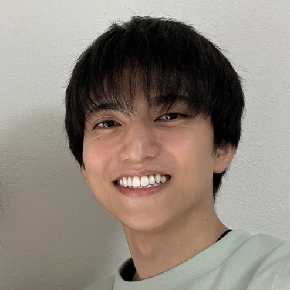
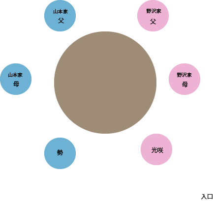
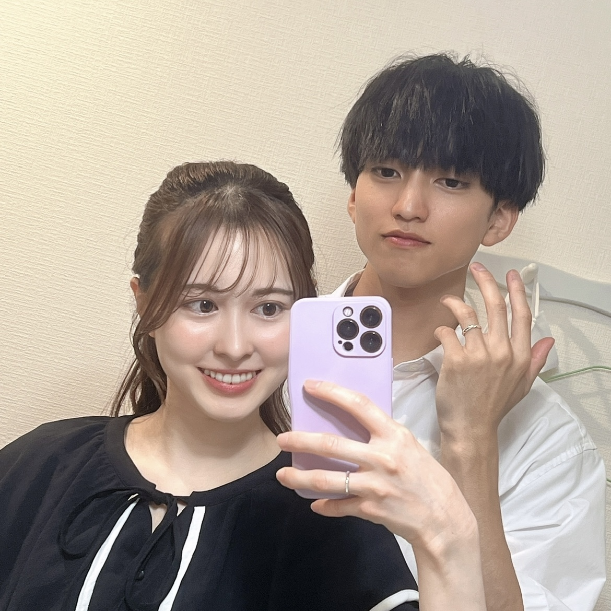
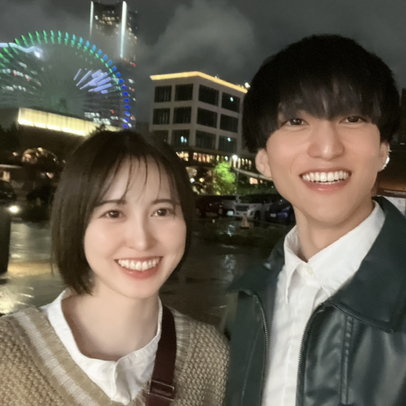
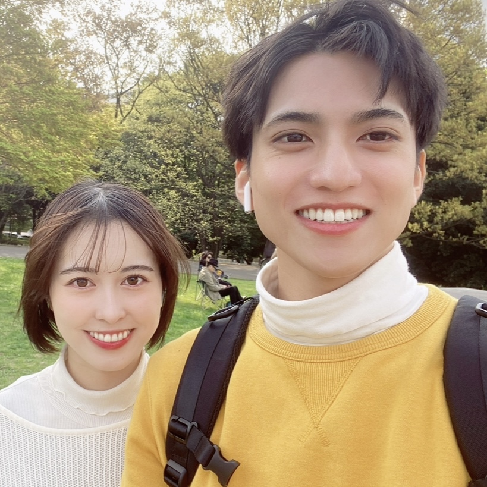
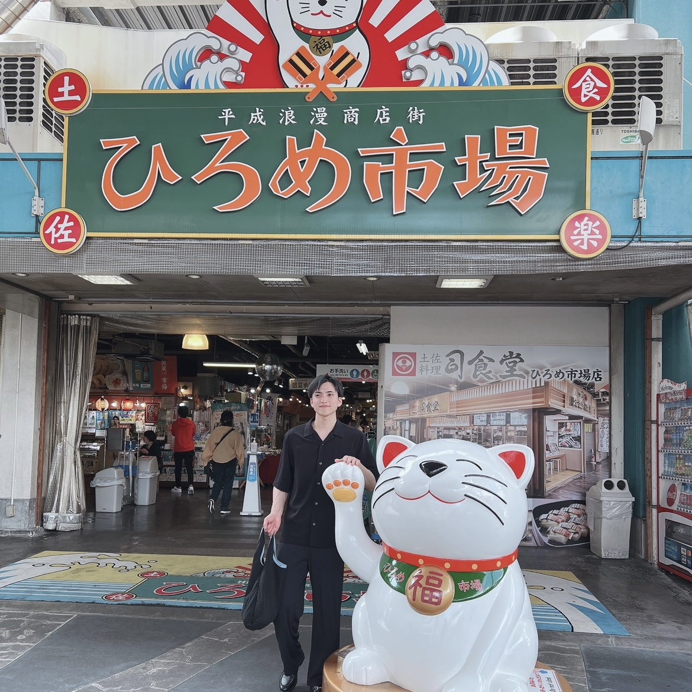

山本家＆野沢家
顔合わせ食事会
ごあいさつ
Greeting
ご多忙のところ私たちふたりのためにお集まりいただき、誠にありがとうございます。
当日のお食事会を両家の親睦を深める機会にできればと思っております。
当日はどうぞよろしくお願いいたします。
当日の予定
Program
| 会場 | |
|---|---|
| 2024/3/16(土) | 13:30 |
| 金香楼-元町中華街 中華料理 | |
| 神奈川県横浜市中区山下町200 | |
| 流れ | |
|---|---|
| 13:30 | 初めの挨拶 |
| 13:35 | 家族紹介 |
| 13:40 | 乾杯、会食、歓談 |
| 15:10 | 結びの挨拶 |
| 15:15 | 記念撮影 |
プロフィール
Profile

山本 勢
1996年8月25日生まれ。O型。高知県出身。趣味は運動。チョコが大好き。
野沢 光咲
1997年9月17日生まれ。B型。神奈川県出身。
趣味はお菓子、パン作りと食べること。カラオケも大好き。
家族
Family
山本家
Yamamoto Akira
山本 聡
1965年1月10日生まれ。
高知県出身。地方公務員、
四万十市役所勤務。
Yamamoto Miwa
山本 美和
1969年6月20日生まれ。
高知県出身。保育士。
Yamamoto Haruki
山本 春輝
1991年11月18日生まれ。
地方公務員、高知市消防局勤務。
Yamamoto Takuma
山本 拓馬
1993年7月28日生まれ。
資格取得に向けて勉強中。
野沢家
Nozawa Takashi
野沢 隆
1965年3月19日生まれ。
神奈川県出身。
設計事務所を経営。
Nozawa Naoko
野沢 尚子
1970年7月21日生まれ。
神奈川県出身。専業主婦。
Nozawa Saori
野沢 彩織
2002年8月23日生まれ。
会社員。
Nozawa Kousuke
野沢 幸佑
2004年9月10日生まれ。
システムエンジニア。
当日の座席表

Seating Chart
思い出
Memory



